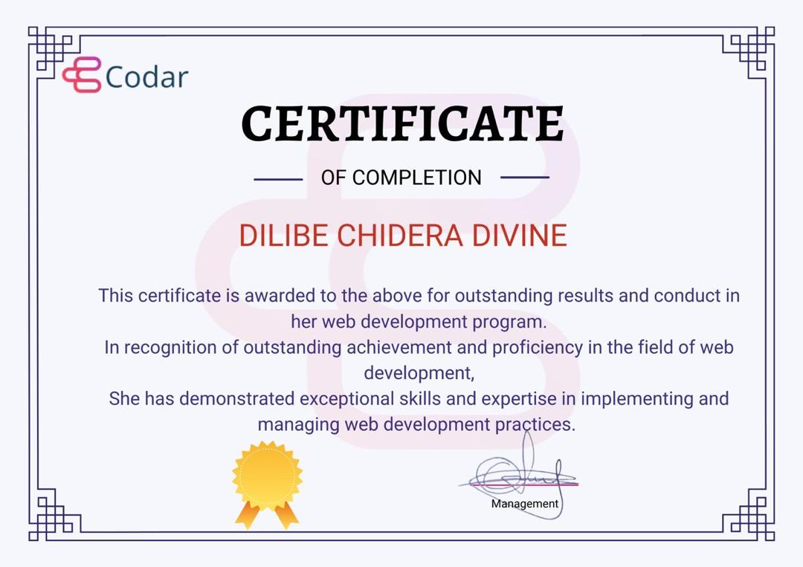

Divine Dilibe
FRONTEND WEB DEVELOPER
LinkedIn |
09030129356 |
divinenation1@gmail.com |
GitHub
Professional Summary
A Frontend Web Developer and Web3 writer who is passionate about building clean, user-focused digital experiences. I enjoy learning new technologies, solving real problems, and working on projects that challenge me to grow. Whether it is coding responsive interfaces or explaining complex Web3 concepts, I thrive in fast-paced, collaborative environments where I can make a real impact.
Skills
Front End: HTML5, CSS3, JavaScript, React.js, Tailwind CSS, Bootstrap.
Backend: Node.js
Database: MongoDB (NoSQL)
Tools: Git, GitHub, Canva, Framer Motion
Education
Codar
Full Stack Web Development with a focus on Front End
September 2023 – June 2024

Yaba College of Technology
Book Publishing
Expected Graduation: December 2025
Work Experience
Projects
Hunch – Front End Web Developer
Nov 2024 – Ongoing
Developing Hunch, a smart meal-planning platform that delivers personalized meal plans and ready-to-eat meals tailored to dietary needs, lifestyle, and preferences.
- Developing the front-end with React, HTML5, Tailwind CSS, and Framer Motion, delivering responsive and user-friendly experiences.
- Implementing smooth UI animations using Framer Motion to enhance interactivity and user engagement.
- Working closely with designers and backend engineers to ensure seamless integration and high performance across all views.
- Focused on accessibility and cross-device compatibility to provide an inclusive experience for all users.
Key Features:
- Animated Hero Section smooth entrance animations using Framer Motion.
- Subtle Hover Effects - Micro-interactions enhances user's feedback
- Minimalist Design, Clean white space and typography for user focus.
- Reusable Components, Built with modular React components for consistency.
- Fully mobile-optimized layout with clean typography and spacing.
HomeLutions – Front End Web Designer
Jan 2025 – Mar 2025
Designed HomeLutions, a platform that simplifies home repairs by connecting homeowners with trusted professionals.
- Designed UI from scratch using Figma, with a focus on accessibility, clarity, and mobile responsiveness.
- Created smooth animations and transitions using Framer Motion to enhance user experience.
- Worked closely with developers to ensure proper handoff for implementation in React and Tailwind CSS.
- Maintained consistency in design components across all screens and devices.
Key Features:
- Animated pricing carousel that rotates between service plans with highlight effects.
- Section with alternating layouts and a custom vertical connector line.
- Responsive hero section with a modern layout.
- Interactive service cards with hover effects and icons.
- Fully mobile-optimized layout with clean typography and spacing.